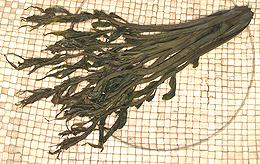
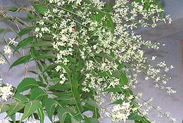
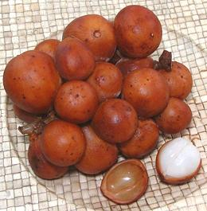
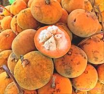
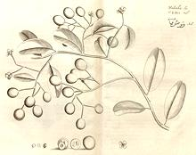

SAFARI
Users
Varieties
Chinese Toon
 [Chinese Mahogany, Red Toon; Xiang chun (China); Daaraluu (Hindi); Suren (Malay); Tong Du (Viet); Toona sinensis alt Cedrela sinensis]
This tree ranges from Nepal on the northwest, to Indonesia in the southeast and is cultivated as a vegetable, particularly in China. The roots, bark and fruit are used in traditional Chinese medicine. The flavor of young shoots reminds somewhat of onion but much less pungent. Varieties where the young leaves are red are considered to have better flavor than if they are green. This is a relatively cold tolerant mahogany and is farmed to some extent, even in Canada.
These aromatic shoots are used in stir fries, salads and particularly
with eggs. Fresh are preferred but are very seasonal (March, April). Since
they are so popular they are now being grown in China in greenhouses and
plastic tunnels for year round availability. The photo specimen, purchased
from an Asian market in Los Angeles, was preserved with salt, the form
normally sold here. It was 9 inches long and weighed 1-3/8 ounces.
Details and Cooking
Neem
 [Indian Lilac; Sadao, Sdao (Thai); Kadao (Laos); Vepa, Vepa Pootha {flowers} (India - Dravidian); Vempu (Tamil); Neem (Bengali); Mwarobaini (Swahili); Azadirachta indica]
This fast growing tree ranges from Persia through Southeast Asia, parts
of Africa and has been introduced to other parts of the world. In India
and mainland Southeast Asia, young shoots and flowers are eaten as a
vegetable, though they are somewhat bitter, and are used in pickles.
Throughout its range Neem is known as a most powerful medicinal plant,
also as an insect repellant. All parts of the tree are used, and oil
from the seeds is used in cosmetics.
Details and Cooking.
Photo by Gpics distributed under license
Creative Commons
Attribution-ShareAlike v2.5 Generic.
Lanzones
 [Lanzon, Lanzones (Philippine); Lansones, Buwa-buwa (Tagalog); Lanzones, Langsat (English); Langsad (Thai langsat), Longkong (Thai duku); Dua da dot, Lon bon, Bon bon (Viet); Long kong (Cambodia); Lansium parasiticum syn. Lansium domesticum]
Native to Southeast Asia, this large mahogany tree bears edible fruit of some popularity in its native region. The fruit contains 4 or 5 translucent wedge shaped jelly-like arils with a pleasant flavor quite similar to pink grapefruit, but a little lighter. Some arils may contain a flat bitter seed in their center, but most have undeveloped seeds. There are three common varieties, Duku, large with thick rind, Langsat, large with thin rind, and Auaeum, small with tough rind and sour arils surrounding large seeds. There are also Duku-Langsat hybrids. The Duku bears bunches with only a few fruits, so the commercial products are Langsat.
The photo specimens, previously frozen, were from Thailand, purchased
from a large Philippine market in Los Angeles (Eagle Rock). They were up
to 1.37 inches diameter, and would have been much lighter and yellower in
color if they were fresh rather than frozen. This is an "eat out of hand"
sort of fruit and quite easy to peel. Yield was a decent 51% edible, so
at 2015 US $1.79 per pound they were only moderately expensive, compared
to some exotic imported fruits. The soft bitter green seeds can be up to
0.47 inch across, but most will be undeveloped and almost non-existent.
Santol
 [Santol (Filipino); Lanzones, Langsat (English); Krathon, Sathon (Thai); Iecapi, Sentul, Ketuat (Indonesia); Sandoricum koetjape]
Native to the Southeast Asian Peninsula, this large mahogany tree is now cultivated throughout Southeast Asia and parts of India. Only a few specimen trees are grown outside the region because even southern Florida gets too cold. There are two varieties, red and yellow, both producing fruit that, when cut, looks a lot like a Mangosteen (not related). Mature fruits are fairly large, up to about 3-1/2 inches diameter.
The pulpy white arils surrounding the inedible seeds may be sweet or
sour. The arils may be eaten raw, or cooked, and are sometimes candied or
made into marmalade. It is unsafe to swallow the seeds as they have
caused intestinal blockage. Unripe Santols can be grated and used as
unripe papayas are to make salads popular in Thailand. They are also
often cooked in the unripe state in the Philippines.
Photo by Steve4343 distributed under license Creative Commons
Attribution-ShareAlike 2.0 Generic.
Langsatan
 [Gumi {fruit}; Aglaia edulis]
This tree, native to Southeast Asia, is one of a number of mahogany
trees that produce edible fruit eaten locally. It grows throughout Southeast
Asia and in the West Indies. The translucent or light brown fruit aril (pulp
surrounding the seeds) is eaten in the regions where it grows wild, but it
is not much cultivated anywhere. It is said to be succulent, cooling and
pleasant. The brown to reddish fruit is elliptical about 2.1 x 1.4 inches
with a single large elliptical seed, but shape varies. The fruit grows in
looser clusters than most mahogany fruit.
Illustration copyright expired.